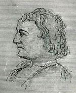

Melancton Smith
Melancton Smith (1744-98) was a Long Island-born, businessman and operative who found himself in Albany during the latter stages of the Revolutionary war.
Settling in Poughkeepsie as a young adult , this patriot-opportunist supported the war and the political revolution serving in a number of state and local capacities which brought him into contact with the Albany Committee. During those years, this individual took advantage of his positions to acquire extensive lands and other properties in what became upstate New York.
In 1781, he was among those newcomers who purchased the so-called "Freedom of Albany." At that time, he was identified as a merchant. We are uncertain as to how long he actually spent in Albany. He seems to have made no other imprint on the community record.
In 1785, he re-located to New York City, continued his political and business activities, and is most celebrated as an antifederal spokesman. He died in New York during a Yellow Fever outbreak in July 1798.
Although hardly an Albany resident, Melancton Smith apparently was "in business" in the city in 1781.